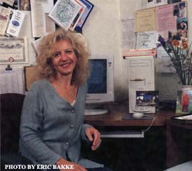
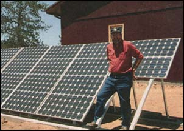

10 Surefire Home Businesses For The New Decade
How can I be my own employer, create work-from-home jobs and not spend a fortune doing it?
By Paul and Sarah Edwards
December/January 1999
We wanted to be able to answer these questions with confidence, so we set out to identify what we consider to be the best home-based businesses, given the realities of the new decade. Before we introduce you to the businesses, a little introduction to our picking and choosing techniques is in order.
First, we drew on our own experience. We have been working from home ourselves since 1974, and ever since we began writing our book Working from Home in 1980, we have been tracking which businesses people have been running successfully from home.
To screen our selections, we also went to the Bureau of Labor Statistics in Washington, D.C., where we examined the job projections this government office develops and interviewed the experts who synthesize the information that forms the basis for the bureau's projections. Although these projections focus on outside jobs, we find that their work is relevant to home businesses as well. For example, growth in certain job categories may signal other business opportunities, and sometimes the shrinkage of jobs in a category is compensated for by the emergence of small businesses that can be operated from home.
Once we identified businesses that seemed to have a good future, we had to address the issue of what qualifies a business as the best. Income potential was certainly one criterion. We also considered other factors like lifestyle considerations, since today people want more than money from their work.
THE BUSINESSES
BED - AND - BREAKFAST INN
In the past when homeowners had more house than they needed, they took in boarders. Today's version of this is the bed-and-breakfast (B&B) inn, which offers travelers the comfort of a home environment often at a cost less than what a hotel would charge for a comparable room. The idea of bed-and-breakfast inns developed in the 1980s. Although they represent less than 1% of the hotel industry, they are a well-established lodging choice, with some B&B inns even rated by auto clubs. From only 400 bed-and-breakfast inns in the United States in 1975, today there are more than 20,000, half of which are in private homes.
You can make innkeeping your full-time occupation and run a fully licensed inn or manage a B&B as a part-time venture, occasionally renting out three or fewer rooms for extra income. If you hope to make a good profit, the more rooms you have available to convert into guest rooms the better. Profitability with fewer than six guest rooms is difficult, according to a national study by the Professional Association of Innkeepers International. Smaller inns with a higher occupancy rate can make money, as can those located in the West, where the weather is more suitable for year-round travel.
Operating a B&B provides some additional financial perks. Expenses such as interest on your home mortgage, the cost of operating your car, your insurance, eating out, magazines, cleaning supplies and even travel may be tax deductible. But the IRS can be rigid with B&Bs about deducting expenses like gardening, an outside sign and exterior painting.
Start-up Costs
Acquisition cost: If you are converting your existing home, you will not have any acquisition costs; however, if you're buying a functioning inn, you can expect to pay $35,000 to $150,000 per guest room, depending on the area.
Renovation cost: If you are converting your existing home into a fully licensed inn, you can expect to spend $15,000 to $50,000 per guest room, depending on the locale and your taste.
Working capital: To open an inn in your home you should allow for $10,000 per room up front to cover the costs of utilities, insurance, marketing, maintenance, supplies (towels and linens) and so forth. New businesses need additional capital in the initial years. Expect a minimum of three years for break-even in most cases.
COMPUTER CONSULTANT
Although some programmers call themselves computer consultants, there is a distinction between what a computer consultant does and what a programmer does. Whereas programmers are valued for their specialized know-how and are paid to write code, computer consultants take a broader view of an organization and its computer needs in an effort to help solve information-management problems of all kinds. In a sense, a computer consultant is actually a combination of hardware and software expert, programmer, technical writer and business adviser.
The consultant asks people what they want to achieve and explores possibilities for how a computer can help them accomplish it. Whereas programmers work on fixed, objective targets, consultants deal more with broader, moving targets. According to consultant Nigel Dyson-Hudson, "The programmer is like the chief scientist sitting atop a triangle of ever more highly specialized knowledge. Consultants, on the other hand, work on an inverted triangle; the more skilled they get, the broader their knowledge must become."
Knowledge and Skills
Technical knowledge of hardware and software is a must. You need to be an expert in several technical or functional areas (databases, intranets, legal software, medical software and so forth.
In order to market yourself as a consultant, you need to have a specialty, but you must also have an overview of everything in the field so you can provide the entire solution. Once you have a client, you don't want to have to refer him or her to someone else. But you do need to know when to bring in a subcontractor and whom to choose.
You need to be able to inspire trust in your client. You need to have the ability to communicate on the client's level and know how much information he or she really wants. You need to be able to convey with confidence that you understand a client's situation and can take care of it. Without this, even high-level technical skills and knowledge can go unused.
You need to be good at splitting your time among your clients, your work, any team members you work with and keeping up with the industry. This can be difficult with multiple clients who expect quick response and turn-around time. You need to be able to make decisions about your time based on criteria other than who screams the loudest Some in demand consultants take the position: "If you want to be first on my list, then you have to pay for it." Expect to spend a significant proportion of your time interacting with clients
Pricing
Computer consulting rates range from $40 to $125 per hour with $75 being the most typical rate. Factors that influence rates include:
Demand: Y2K needs are creating a terrific environment for many consultants.
Specialization: Rates vary depending on which industries you serve and which hardware and software you work with.
Type of work: Design and analysis pay the highest, but you can also make good money at the maintenance or training level.
Community size: Rates are higher in metropolitan markets and not as relevant if you are highly specialized.
Client size: Rates are higher for large corporations.
Length of project: Some consultants discount for long projects, but there's a case to be made for charging a premium since one is committing over a period of time in which conditions may change to the disadvantage of the consultant.
Whether you work through a broker who finds the jobs for you: Brokers who refer you to or place you with clients typically take 20% to 30% of your hourly rate.
Bidding a fixed price per job is risky for an inexperienced consultant. A high bid that protects the consultant may scare off a potential client; a low bid can cause heavy losses for the consultant if the project costs exceed estimates.
DESKTOP PUBLISHING
As an occupation, the Department of Labor predicts desktop publisher to be one of the fastest growing vocations, expecting it to leap 74% by the year 2006.
The market for desktop publishing, both print and electronic, is extensive, including large companies, nonprofit organizations, government agencies and other small businesses. Organizations of all kinds need material for both their internal and their external communications, from memos and papers, to training manuals, annual reports, quarterly journals and sales/promotional brochures and ads. Since the arrival of desktop publishing in 1985, crudely typed and photocopied price lists, contracts, newsletters or bulletins are no longer acceptable. Now proposals, flyers, forms, newsletters, reports and presentation materials of all types are expected to look professionally done and be produced quickly for both print and Web use.
But changes in technology not only provide more desktop publishing opportunities, they've also affected what it takes to succeed in desktop publishing today. Norman Paddock, founder of the Association of Desktop Publishers says, "The day of the general desktop publisher is diminishing. Now you must find a specialty and market the blazes out of it." Self-employed desktop publishers not only need to know more than their clients but they also must have better technology and sharper skills. Because many people have the ability to produce desktop published materials with their own software, a professional desktop publisher must offer something special. This includes understanding and being able to manage the mechanics of what's going to happen to material once it's designed, whether it will be in electronic or print form.
Aysha Griffin, owner of Studio A in Colorado Springs, Colorado, works with businesses and nonprofits in producing their marketing materials. Because she is a writer and former business editor, she recognizes the business challenges of her clients and develops writing and consulting assignments to assist them. While some desktop publishers still take on any work that comes their way, the trend is to focus on specific industries, sizes or types of clients or selected types of documents. You can specialize in newsletters or catalogs, but you can specialize still further by doing only newsletters for law firms or catalogues for mail-order craft companies. The possibilities are limited only by your imagination. The trend is to distance oneself from being considered an ordinary desktop publisher.
Desktop publishing work can be done at home, but someone skilled in desktop publishing may also work on-site for client companies. Some desktop publishers have begun calling themselves Web-page designers because while there has been pressure toward lower hourly rates for desktop publishing, Web-page design rates run higher - as much as double.
Knowledge and Skills
You need to learn to use desktop publishing software in depth, have good computer skills and knowledge of scanner technology.
You need a feel for design and typography, plus an ability to edit other people's writing and to write. Lawrence Miller, a designer who operates Daddy Desktop, points out that "too many desktop publishers can't write. They mistake typing for writing. They also can't design. They mistake technology for the ability. It is possible, and desirable, to learn to design and write well, but you won't learn it in a software manual. It's a process of being aware of what you want to do, studying, doing, taking more courses and doing some more."
You need to be able to read standard editing symbols, because clients may use them in marking up copy for changes and corrections.
Good communication skills are a must, both to get business and to draw out of clients what their objectives are. You must help your clients, as visual concepts are often difficult to articulate clearly.
You should know or be willing to learn about typesetting, layout and printing practices and procedures. This enables you to estimate the time it will take you to design and lay out desired material when you bid on projects.
Finally, you also need patience because clients often change their minds once they see what they thought they wanted in print or on the computer screen.
Pricing
Desktop publishers may charge by the hour, by the page or by the job.
By the hour: Typical hourly prices range between $25 and $65. Heidi Waldman of St. Paul, Minnesota, points out that "in a metropolitan area, a desktop publishing business is not going to survive charging under $40 an hour." Scanning may need to be billed separately at $25 to $30 an hour or by the scan (approximately $5) but clean-up of graphic images can be billed at or near the rate for desktop publishing.
By the page: Typical prices range between $25 and $50.
By the job: Pricing by the job involves estimating how many hours the job will take and allowing a fudge factor for corrections and changes. This method of pricing is popular, because many clients prefer to pay a fixed price.
MICROFARMING
Gardening ranks as one of America's top pastimes, but it can be much more than a hobby. Today you can create a full-time livelihood without owning the acres of land. A back yard, basement or a small parcel of a few acres is all you need to grow herbs, sprouts, mushrooms, edible flowers and specialty vegetables and fruits such as squash blossoms, white beets, blue fingerling potatoes, white asparagus and yellow sugar baby watermelons in urban and suburban areas. In fact, micro or vest pocket farming is becoming an important part of agriculture in America. Charles Walters Jr., publisher of Acres magazine, says, "The only bright future in agriculture is to get a few acres, grow the product and be near where the people are." Walters advises, "Find yourself a couple of hundred customers and make yourself a living."
Over the past 30 years, Americans have developed a robust appetite for exotic, healthy and unusual foods. They are looking for colorful ingredients, new flavorings, organically grown produce and ethnic specialties. As a result, restaurants, upscale grocery stores, health-food stores, gourmet shops and mainstream supermarkets are increasingly offering specialty foods to their customers. Meanwhile, the public is seeking out specially grown foods, flowers, herbs and condiments at farmers' markets, swap meets, produce stands and country shops.
Start-up Costs:
"If you're already a gardener, your start-up costs will be minimal, but if you're starting; from scratch, expect to spend $10,000 or more," advises Lynn Bycznski, author and publisher of the Growing forMarket newsletter. Here's where your money will go:
Land: How much land you need to earn a full-time living; depend., on what kind of crops you have. Where crops can be in ground year-round, a quarter of acre can be profitable. In most parts of the country with a winter season, it takes two to ten acres.
Supplies: You will need seed, fertilizers, growing pots, planting boxes, hoses and other supplies. Expect to invest from $500 to $2,000 at first. Building a small greenhouse requires $500 to $1,000 for a wood structure or $2,000 to $20,000 for a steel structure depending on size and materials used.
A vehicle toservice your accounts: You should be able to get a used truck for around $4,000 or a used van for $6,000 to $8,000; new delivery vans cost around $14,000 to $16,000. Office supplies: You can set up an administrative office with computer, multifunction printer and fax, a desk, chair and file cabinet for about $1,500. Business cards and stationery
may cost between $ 100 to $400. While you can make labels and signs yourself by hand or with your computer, spending $1,000 to $2,00 on a designer may produce a return many times over in increased sales.
Typical Gross Revenues:
$7,000 to $12,000 an acre for specialty produce sold to consumers and upscale restaurants. $10,000 to $12,1M an acre for herbs and spices. $15,000 to $30,000 an acre for cut flowers. Greenhouses According to greenhouse expert Ted Taylor, a 30-by-96-foot greenhouse holding 10,000 six-inch pots can produce $2.50 profit per pot, or about $20,000 in 90 days.
Farmer's Markets: Grower sale average 51,000 a day, according; to a reader survey by the Growing for Market newsletter. In smaller markets, sales range from $200 to $700, but in New York's Green Market, sales can reach $3,000 a day. Expect to pay between $25 and $75 a day for a space at a farmer' market, though some markets are now charging; a percentage of gross receipts.
Overhead: moderate 25%to 60%.
The sale of organic foods has been doubling every three and a half years since 1990, despite the fact they are usually priced at a premium, typically selling for 20% to 100% more than nonorganically grown foods. The popularity of farmers' markets has been a particular boon to microfarmers. People growing the perfect lettuce or tomato often can charge more than supermarkets and have buyers standing in line. In fact, unusual items that a supermarket produce buyer won't touch may sell like wildfire at a farmers' market because they are different Organic farmers in particular are benefiting from farmers' markets because supermarkets don't carry enough organic products to satisfy the one in ten Americans who seek them out.
Other popular items include herbs used in cooking, teas, medicines, condiments (e.g., specialty vinegars and mustards), perfumes and aromatherapy, as well as oat grass to help the digestion of household cats. There's also a growing market for decorative or aromatic flowers, as well as heirloom varieties of vegetables and fruit, whose seeds are passed down through generations.
Robyn and Robert Rohlfing live in Plymouth, Nebraska, where they are successful organic herb producers. They market most of their herbs locally and have had the same clients for nine years. Robyn calls herself an "oddball farmer" and explains that of all the herbs used in the United States for cooking and medicinal purposes, only 10% of them are grown in this country.
Even if you don't live in a temperate climate, you can still be in this business by growing flowers, herbs or produce in a greenhouse. Greenhouse nurseries have become the sixth largest source of agricultural commodities in the U.S. as the interest in tropical plants, trees (for woody ornamentals), medicinal herbs and hydroponically grown vegetables (especially tomatoes) has created a year-round demand. Greenhouse expert Ted Taylor also points to the popularity of "juicers" as another reason to be in the greenhouse business, growing organic fruits and vegetables to feed the juicer craze. Whether your love is garlic or ginger, mushrooms or marigolds, oregano or blood oranges, there's probably a way for you to turn your love of food and flowers into a new career or just some extra cash.
Knowledge and Skills
A love of food or for growing things is essential to keep you motivated through the entire learning process. Growing produce, herbs or flowers is part art and part science, and mistakes are costly.
You need to have knowledge of plants, growing patterns, plant disease, insects, fertilizers and many other fields.
You must be sensitive to market needs and demands, to what people want to eat, what they find appealing, who's buying what and when they're buying.
Tenacity and persistence are required as you contact wholesalers, supermarkets, groceries, restaurants, cataloguers, gift-basket stores, herbalists and other potential customers to sell your goods. Selling produce or flowers is like selling any other product you must show your customers that your product is of high quality, and you must be amenable to their needs.
PHOTOGRAPHY
"If I could do anything, I'd spend my life behind the lens of a camera." If those could be your words, you can make it so. Because photos play a part in most human activities - from family life to fine art, from education to new media - you can combine a passion to take pictures with your other interests and experiences to create a fascinating career.
As a professional photographer, one decision you'll need to make, though not necessarily immediately, is whether to be a generalist or to specialize in one or several areas that are of particular interest to you. If you live in a smaller community, where versatility is a strength, you may not need to find a niche in which to distinguish yourself unless you want to. The Web allows photographers to sell photographs on many subjects from almost anywhere. But most photographers specialize as they acquire experience and expertise and as they get a sense of the best markets for their work. Often specialties emerge from the personality and preferences of the photographer. For example, if you enjoy interacting with people, you might specialize in:
Portraits, addressing the needs of the more than one in five American households that have professional photographs taken during the course of a year. You might further choose an even more specialized niche like taking pictures of newborns and babies.
School photos, which includes class pic tures, and may extend to sports-team photos and reunions.
Wedding photographs, which involve lots of contact with clients.
Publicity and portfolio photos for models, artists, actors and actresses. Mary Ann Halpin combines her experience as a former actress with her love of photography by specializing in what's called "head shots" for actors and actresses. Recently, however, she's developed a new specialty. She photographs pregnant mothers and has had her first coffee-table book published, Pregnant Goddesshood, A Celebration of Life ( www.goddesshood.com ).
You can also specialize in taking photos of just about anything that fascinates you, as have the following photographers:
Ernest Hori ( www.horizenfoto.com), in spired by seeing a portfolio of original photographs by Ansel Adams, dedicates his career to nature photography. Warren Faidley, fascinated with bad weather, decided to photograph hurricanes, tornadoes and disasters of all kinds. His photos are represented by twelve photo agents around the world and a film agent in Los Angeles who markets 35 millimeter film.
Start-up Costs:
Camera/lenses: $1,000 to $12,000
Computer: $1,500 to $3,000
Printer: $300 to $800 (or)
Multifunction printer/fax/scanner/copier (go to a service bureau for high resolution scanning): $150 to $600
Cell phone: $75 to $200
Initial marketing budget: $1,000 to $5,000
Total: $4,025 to $2,160
Potential Earnings:
Gross Income: As a weekend photographer, $7,000 to $9,000 a year; as a part-time business, $70,000 to $150,000; as a full-time business, $175,000 to $250,000.
Overhead:
High; if your work is local, 5(9,'o to 60%, with travel, 70% to 80'/0.
You need a sensitive eye and a sense of composition to create pictures people will look at. You need a passion for taking pictures and you need the technical know-how to create professional quality images reliably.
Pricing
In commercial photography, the photographer sets the price. The average price for professional portraits in 1998 was $54. This average covered a range of $18 for sports and team photographs to $20 for school photos to $335 for wedding or publicity photographs. For work away from home, hourly, daily and weekly location rates are used. Adding film and materials costs as separate charges helps with overhead.
The buyer sets the price for stock photographs. On a small publication, prices range from $20 for an inside photo to $50 for a cover photograph to hundreds of dollars for covers on larger publications. National magazines will pay $1,000 to $3,000 to a photographer assigned to take a cover photo, less for feature-story photos. Rates also vary according to experience; beginners may get $25, semi-pros, $75 and professionals, $250 for the same-size photograph used for inside editorial.
REMODELLING CONTRACTOR
If you own your own home, chances are you remodeled within 18 to 36 months of buying it, and you used a professional to do the work. Two out of three Americans own their own homes and spend as much as four times the original price of the house remodeling and maintaining it. About 30 million homeowners will do some remodeling this year and, according to the Census Bureau, professionals do 78% of all remodeling work. In 1998, that came to $125 billion of work for remodeling contractors, up from $46 billion in 1980.
Although owners may decide to remodel at any time and some do quite frequently, houses are ripe for remodeling when they are over 15 years old. Eighty-five million homes in the United States are over 15 years old, and over 60 million are over 25 years old. So if you have the desire and know-how to help people improve their homes and office buildings, you have an enormous number of potential customers. It's estimated that seven out of ten remodelers are self-employed individuals. As Kermit Baker of the Harvard-MIT Joint Center on Housing Studies reports, "This is a stealth industry."
Remodeling professionals may specialize in multiple ways. First, there's residential versus commercial remodeling. Commercial remodeling includes making tenant improvements in renter-occupied buildings; adapting buildings from one type of use to another; and rehabilitating historic structures.
Contractors can also specialize in particular types of residential remodeling, such as restoring homes damaged by fire or suffering from other insurable losses, condo/apartment remodeling, renovating historic residences, or they might specialize by architectural style. Another way to specialize is by what areas of a residence you remodel.
The National Association of the Remodeling Industry keeps track of the kind of remodeling people are interested in from calls to its Remodeling Hot-line. Here's what they find: Kitchens: 47%; Baths: 46%; Other Interior Work: 41%; Windows: 39%; Room Additions: 35% Sunrooms: 32% To get ahead of the curve, consider specializing in home offices, greenhouses, additions for elder relatives or pools, saunas and steamrooms.
Two factors almost assure substantial growth for the remodeling industry. First, three million homes change ownership each year and, second, the houses people are buying and living in are growing older. Only 15% of home sales are of new housing. If the economy is up, people have money to spend, and with a move often comes a remodel. If the economy is down, people remodel to make do with the home they might otherwise have sold for larger or more luxurious housing. In either case, there's work to be done by remodelers. Adding to this is a tight supply of upscale housing in some markets, often due to environmental controls, resulting in affluent owners remodeling instead of moving up.
Knowledge and Skills
You need to have an understanding of the industry, as well as some background knowledge in engineering, architecture, interior decoration or the like. You need to have hands on capability to do the work unless you compensate with other skills such as business management, computer operation or interior design and contract out hands-on work.
Even if you are not hands on, you need enough knowledge to handle scheduling and ordering and to oversee quality. If you broker or outsource components of the work, you need to be effective at coordinating, scheduling and supervising other people.
TAX PREPARATION SERVICE
Despite all the passion for tax simplification, Congress has made more than 5,000 changes in the federal tax law since the last major tax reform in 1986. They passed 800 changes in 1997 alone. In 1998, changes resulted in 11 new tax forms, changes in 177 other forms and the ballooning of the instruction booklet that comes with commonly used schedules. Form 1040 had grown to 107 pages. No wonder the tax preparation business keeps growing! Growing numbers of taxpayers are simply throwing up their hands and heading off to a tax professional.
Although most people don't realize it, the Internal Revenue Service and most states don't require someone to have a special license to prepare other people's tax returns. You don't need to be a CPA or have a degree in accounting. In fact, many CPAs know little about preparing tax returns because they specialize in other branches of accounting, such as cost accounting, property accounting or auditing. And, of course, while the number of people who need help in filing complex tax forms and dealing with complex tax issues is growing, many of them can't afford CPA fees.
We're not suggesting that you can just hang out a shingle and claim to be able to prepare other people's taxes. But the tax preparation field is more accessible than you may think. One way to start is to go to a school such as those operated by H&R Block. If you prove to be adept during the course, which lasts a matter of weeks, you may be offered a position with the company, enabling you to in effect get a paid apprenticeship. Even with this training and experience, most people won't yet know enough to be a self-employed tax preparer, although they may be capable of working for a tax preparation company with certain kinds of clients, mostly individuals.
A route to a more lucrative future as a tax preparer is to become an "enrolled agent." While the enrolled-agent designation is still not popularly known, it's been around since 1884 and is the only designation specifically granted by the federal government. It requires passing an exam and demonstrating proficiency in handling tax matters. Enrolled agents may prepare taxes for individuals, corporations, partnerships, estates, trusts and any entities with tax-reporting requirements, and they are entitled to appear before the IRS at hearings to represent clients.
While there are no academic requirements to become an enrolled agent, the exam takes two days and is considered rigorous, with only 30% of the applicants passing each year. People who have worked for the IRS for five years don't need to take the test There are about 35,000 enrolled agents in the United States compared to about 375,000 CPAs.
Another route into tax preparation is working for a state agency. That's what Gary Lundgren of Minneapolis did before going out on his own. Lundgren focuses on helping clients facing collection procedures such as losing bank accounts, homes and businesses. He files appeals and appears before the state agency or IRS on his clients' behalf, aiming to reduce their tax liability (and often winning large concessions).
Lundgren points out that it helps to specialize in a particular area of taxes because it is hard to know it all, and specialists can charge more for their time. Enrolled agents can specialize in an area of taxation such as estate and financial planning or work with particular kinds of clients such as high-tech firms or the clergy from a specific denomination and thus draw a clientele from across the nation.
Whatever your personal feelings are about taxes, they are an inescapable part of life. If you enjoy making sense of numbers, tax preparation may be just the career for you.
Pricing
Prices are either a flat fee per return or by the hour. For a simple 1040 return, rates range from $75 in low-cost areas of the country to $125. Complex returns are usually billed by the hour at rates ranging from $50 to $200 and can total several thousand dollars. What might otherwise be a simple return can be made complicated if your client brings in a sack full of bills for you to organize and tabulate.
WEB SITE DESIGNER
The Web has taken its place as a staple of communication and commerce. It will be the hot medium for years to come just as radio and TV were in the 20th century. Billboards and TV commercials regularly display Web site addresses. Projections for growth of e- commerce leap by billions of dollars with each successive survey. By the time you read this entry, you're apt to be getting your daily dose of news, shopping for myriad products from computers to real estate and looking up whatever information you need through the Web more often than you do through the traditional sources of the past
Already e-mail has surpassed the telephone as the primary means of communication by corporate managers. Some demographic groups are more likely to turn to the Web than to the Yellow Pages. To be competitive, virtually every existing business, no matter the type or size, must have a well-designed, high-impact Web site in addition to the usual brochure and Yellow Page listing.
While Web design software makes it possible for even the smallest companies to create their own Web sites relatively inexpensively, these companies know that their sites should be sophisticated yet simple to navigate and versatile. Therefore, companies are turning to professional Web designers for the expertise to create truly effective sites. In fact, it's become difficult even for a Web designer to have mastered all the tools and techniques required to produce complex Web sites. The field of Web design is becoming quite specialized.
One large division is between designers who do front-end work and those who do back-end work. Front-end design is what you see when you visit a site; back-end design is the behind-the-scenes elements that make the site work. Back-end designers specialize in such site functions as chat rooms, e-commerce, database integration, dynamic site elements, CGI programming, PERL scripting, Active Server Pages, Java scripts and Java. The front-end designers specialize in designer user interfaces. In fact, a designer can master a single program such as Macromedia Slash or Macromedia Shockwave and earn a good living as a specialist in that application.
That said, of course, clients usually expect a complete or "turnkey'' solution for their Web needs, so solo designers either need to expand their skills to meet all of a client's needs or make alliances with other specialists with whom they can work jointly to serve one another's clientele.
The market for new or improved Web sites is still far from saturated. According to the latest U.S. Census figures, there are over 11.5 million small businesses in the United States with fewer than 100 employees (your primary market). At the time of this writing, only about half of those businesses had any on-line presence and only one in ten had a Web site, but another one in six expected to have one within the next year. Many businesses that have Web sites aren't satisfied with them or need to update them, providing an ongoing market for Web designers.
Knowledge and Skills
You need to be able to critically evaluate Internet Service Providers in terms of what they can support so you can match what they offer with what your clients need and what you design.
Background in graphic design or a related field is important in creating successful Web design. Good-looking, effective sites are created from the same basic principles that govern top-flight graphic design. There are many programs that, offer templates and forms for Web sites, but in the view of Todd Cranston-Cuebas of Sticky Monkey Design of San Marino, California, you will do far better with solid design talent behind you. "Anybody can fill out a template. Your skill and experience are the true assets you will have to offer potential clients."
You need to be thoroughly familiar with how people interact with a Web site and what type of experiences they're looking for. You also need to understand the elements of an effective Web site, from color and size to navigation and interactivity, as well as what's involved in creating activities a client may want to provide visitors, including chat rooms and message boards, ad banners, links, clickthroughs and electronic payment systems.
You need to have knowledge of HTML and other programming languages such as JAVA. You want to be familiar with an array of basic Web tools for integrating text, graphics, animation, photographs, sound and so forth.
You need to have good communication skills so you can assist your clients in identifying what they want to accomplish with their Web sites, who they want to attract and how they want their clients to use and interact with the site.
WEBMASTER
The Internet ranks alongside the telephone and the automobile in the ways it's changing how we live our lives - how we buy everything from books to automobiles, make travel reservations, get information, do our work, spend our leisure time, affiliate with other people, even connect with a doctor or, for that matter, a mate. Just as telephones require operators and automobiles need mechanics, active Web sites, particularly ones where commerce is done, need to have someone to manage, update and oversee their operation. That's the role of the Webmaster.
Webmasters are responsible for developing and maintaining the day-to-day operations of Web sites, which include converting editorial content into HTML, assuring that the site is working smoothly and dealing with any technical glitches. Webmasters' duties rarely, if ever, include the development of the site itself. While the job description of Webmaster is evolving, we know that being one requires a combination of technical, editorial and business know-how, requiring people to use both sides of their brains adeptly.
Webmasters can work at different levels. Some do the technical work of maintaining their clients' sites; others act more like general contractors in the construction held, contracting out various aspects of site management. This means a Webmaster doesn't necessarily need to know code, but will be responsible for the quality of the code that operates the site.
Larger companies tend to hire Webmasters as staff, though not necessarily with that title. However, Bill Cullifer of the National Association of Webmasters reports that some Fortune 500 corporations do contract out for their Web management. Smaller companies and organizations are more apt to contract out for a Webmaster because they can't afford to hire someone skilled enough to carry out this role as a full-time staff person. Also their site often doesn't require a full-time investment.
Being a Webmaster is something that can be done from virtually anywhere, including, of course, at home. Because of DeskLINK and pcANYWHERE software, which enables the Webmaster to access his clients' computers remotely, there is rarely any need to do work at the clients' sites.
Knowledge and Skills
You need to be able to see the big picture, which means understanding the client's objectives for sales, customer support, product information and publicity, and how these objectives can be met on-line.
Superior organizational and project management skills are required, and you should enjoy problem solving. You should also have a good general knowledge of the Internet and the World Wide Web in particular, as well as an understanding of hit/flow tracking, statistical report generation, Web quality assurance, process automation, networking fundamentals, Web server administration, dedicated-line and dial-up communication protocols, legal issues of the Web, Hypertext theory, human computer interfaces and multimedia on the Web.
Unless you contract this to specialists, technical proficiency in HTML, CGI, Perl programming and scripting (and for some clients Java), as well as system administration in UNIX and Windows NT will also be required, as will knowledge of the latest technology and Web management skills sets.
And depending on the client, you may also need marketing and promotional skills.
ALTERNATIVE ENERGY
INSTALLER
If the world runs short of fossil fuels, this will be the ultimate business. In the meantime, the market for the installation of alternative energy systems is being fueled by the exodus of people from urban areas. People in increasing numbers are moving to remote locations where they do not have access to a source of power from utility companies. Or if they do, they choose not to connect to the power grid because of their values or for economic reasons.
The exodus of urban dwellers, or as they are sometimes called "urban refugees," to the countryside is equal to the movement of a population the size of Nebraska or Nevada dispersing itself. Between 1990 and 1995, this amounted to a net gain to nonurban areas of 1.6 million people, reversing the opposite trend that existed through most of this century.
According to a Gallup survey, 56% of Americans prefer to live in the country or a small town. Perhaps helping this desire is the fact that people are able to save 25% to 40% on real estate that is not connected to utility lines. They are then able to install alternative energy, usually solar, for a fraction of their real estate savings and live in beautiful remote locations without going primitive. Solar power became available in the early 1980s. Before that, generators, wind and hydro were the only sources of alternative energy. While those are still used, most people don't have access to wind and hydro. Generators depend on fossil fuels that must be transported in.
Deregulation has upset the stable world of energy and now people wanting to become energy independent have choices. As this is being written, 160,000 people are "off the grid," and their numbers are growing at 30% a year. "Some people are environmentally conscious; others don't want to use nuclear-derived power," says Richard Perez, publisher of HomePower magazine. "Some people just want to be separate from large energy companies."
But not everyone choosing alternative power is abandoning conventionally produced energy completely. Some put up solar arrays to produce their own energy during the day and send any surplus they produce to the grid. At night, they draw power from the grid. At the end of the year, the small producer and the utility settle accounts based on how much energy the small producer has both produced and consumed.
While residences are the most lucrative market for installers, other customers include RV and boat owners, as well as some commercial entities such as radio stations, bed-and-breakfast inns and large resorts, particularly ones located outside of the United States.
To be an installer, you need to have a mechanical inclination so you can develop the technical know-how to put systems together safely. Since most installers also sell equipment, you also need the willingness to educate people on the values and practicality of alternative energy. Energy installers report feeling good that they are helping the planet by working with renewable energy. But there are downsides: The initial investment in equipment can be relatively high if you stock inventory (though it's not necessary to have an inventory to get under way) and many homeowners resist investing the $6,000 to $30,000 for a solar installation that will serve a household of four because they won't realize a payback until well into the future. Still, for others, alternative energy represents an immediate savings since bringing in power lines on flat land can cost $20,000 or more a mile.
Installers charge from $20 to $35 an hour, with the higher rates going to installers with an electrical contractor's license or an electrician certificate. Once you are under way, overhead is usually low.
Learning is the first step in getting started. You can do this by taking one or more courses. Such training will cost $1,000 to $2,000. You will need tools, costing $100 to $500. Then you can begin by installing a system in your own home. You're then able to say, "I'm doing it." You can get more experience volunteering to design and install systems for neighbors. Some people get an apprenticeship with an installing dealer, usually for minimal pay. The time spent with someone who has an electrical contractor's license will count toward getting your own license.
RUNNER UP
HOME HEALTH CARE
The Labor Department predicts home health care will have the largest job growth of any industry through 2005. The swelling numbers of aging, of course, are the population most in need of home health care, but the government has also provided funding for emotionally disturbed children and adoles cents and individuals with developmental disabilities to receive home care.
Driving the 12% annual growth of home care are three major facts: People don't want to be institutionalized; institutionalizing people is expensive, thus governments are, as they have been for decades, emptying institutions; and patients are being quickly released from hospitals after surgery and illness. Most home health care dollars go to governmental programs and large corporate contractors. But there are opportunities for people to carve out home-based businesses from the nearly $42 billion spent annually on home health care.
As a business, the term "in-home care" means two types of arrangements: You take people into your home and take care of their daily needs and minor medical treatment. Or, you go to someone's home or arrange for other people to go to someone's home (like a referral service) to take care of people.
In Your Home. Corporations such as Mentor, a Boston-based human services company, engage you as an independent contractor, to take patients into your home. The types of problems such patients have include emotional problems, developmental disabilities, head injuries and substance abuse problems. You take only one person into your home at a time. The care provider helps prepare the person for a successful transition back to their own homes as soon as possible. In the case of an emotionally disturbed patient, the mentor provides praise and other rewards for positive behavior and controls, as necessary, out-of-control behaviors by the patient.
No particular background is needed to do home health care. You do, however, need to be a compassionate and caring person and have good communication skills. You also need a spare bedroom, because that's where your charge lives, and a vehicle for taking the person to outside appointments.
Compensation as an independent contractor is about $50 to $60 for each day a patient is in your home. If the services needed are more demanding because of medical needs, the compensation will be higher.
In the Person's Home. Another alternative is to find reliable, qualified people to send as aides to homebound patients. The aides perform any number of services for the client, from cleaning and cooking, to running errands or taking the person to doctor's appointments. In some cases, the aide simply provides companionship for the patient, making sure that the person doesn't fall or forget to take a medication.
Rather than an employment agency or nursing registry, which require licensing, this business is like a specialized referral service dealing with homemakers and companions for people who need home-care assistance. The patient pays you a referral fee only and then pays the aide directly. There are two requirements to making this business successful: You must find reliable, honest and diligent aides, and you must find clients who need them. Like an executive search service or even a nanny agency, this kind of referral service can be hectic to operate, because you're a middle person, working with both the caregivers and with those needing care.
Typical fees for an in-home care referral service are two- to four-weeks' salary for the aide, about $400 to $800. To show good faith, many services promise that if the aide does not work out for any reason within the first month, they will replace the person with a new candidate at no charge.
This article was adapted from Paul and Sarah's recently published book, The Best Home Businesses for the 21st Century (Tarcher/Putnam, 1999).
|
The owner of the Logan Hill Lodge bed and break fastin Kentucky also raises Jacob sheep and sheltersinjured animals of all kinds, including this orphaned deer. |
 Self-employed desktop publisher Aysha Griffin produces marketing materials for clients. |
Nebraska microfarmers Robyn and Robert Rohlfing specialize in organic herbs |
|
Knowledge and Skills You Need to Have |
Mary Ann Halpin photographs expectant mothers. |
 Anne Goodwin is a graphic designer working from her home outside Durango, Colorado. She designs company reports and Web sites while storing graphic design to professionals. |
|
 |
|
|